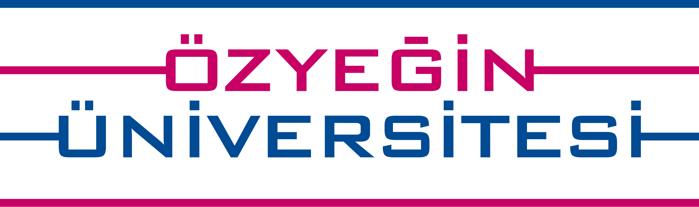
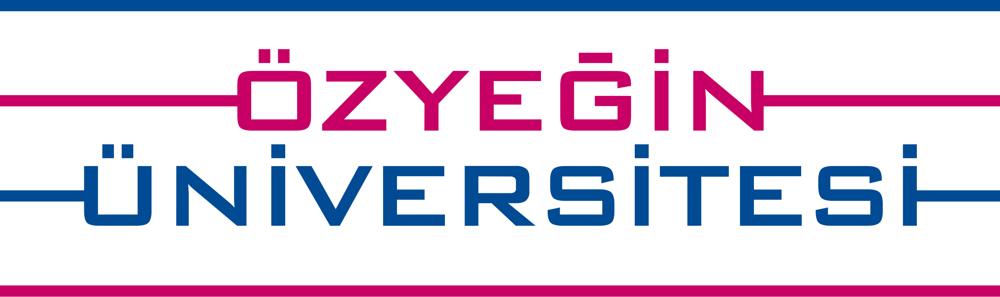
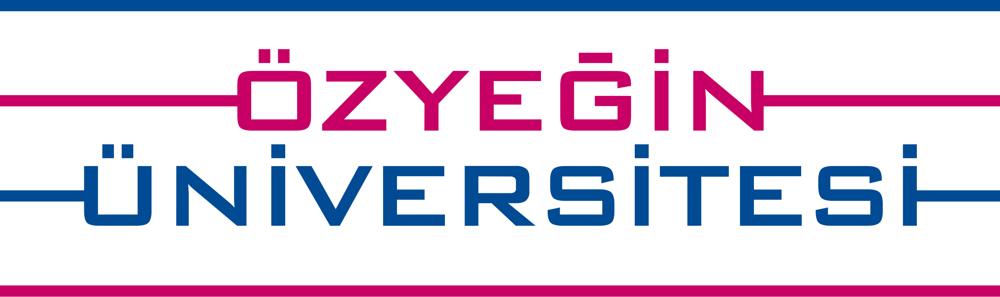

I believe that teaching is a very essential component of academia, and I have had the privilege of doing it in various forms. Below is a summary of my past and present teaching activities.
Designer & Main Teacher
For the past four years, I have been the main teacher of the seminar component of the course MA429 - Algorithmic Techniques for Data Mining (Lent 2020-Lent 2023) at LSE for the programmes
MSc in Applicable Mathematics, MSc in Marketing, and MSc in Operations Research & Analytics. My duties include preparing and teaching the seminar sessions every week, writing R scripts
to computationally and visually demonstrate the theory learned in class, preparing and grading exercises, as well as holding weekly office hours.
I was a subject matter expert for the Professional Certificate in Machine Learning and Artificial Intelligence (2021-2022) that was operated by the global online eductaion firm EMERITUS and designed
by Imperial College Business School Executive Education. For this certificate, I reviewed/created content, wrote Python notebooks to teach implementation of ML techniques with Python, and prepared coding challenges.
Teaching Assistant
Since the beginning of my PhD programme, I have been working as a TA for various graduate-level courses at Imperial College Business School. My duties typically include grading assignments, holding office hours, and giving exam review sessions.
Here is a list of modules.
Mathematics and StatisticsMSc Business Analytics (on campus & online) (2020-2023)
Optimisation and Decision ModelsMSc Business Analytics (online) (2021-2023)
Fundamentals of Database TechnologiesMSc Business Analytics (online) (2021)
Machine LearningMSc Business Analytics (online) (2021)
Big Data, AI & Machine LearningMBA (full-time, executive, weekend) (2021-2022)
Data Structures and Algorithms with PythonMSc Fintech, MSc RMFE, MSc Business Analytics (2021)
CPSE Optimisation Course for ProfessionalsImperial College London (2020)
I am collaborating with London Business School as a tutor. My duties vary from joining a couple of sessions and answering student questions to
preparing and grading homework questions and giving review sessions.
Data Science for Business Analytics and ManagementMaster in Analytics & Management (2020-2022)
Data Mining for Business IntelligenceMBA (full-time, executive, Sloan) (2021)
Applied StatisticsMaster in Analytics & Management (2022)
Data Analytics for ManagersMBA, MiM (2022)
Before PhD

During my research master programme in Tilburg University I worked as a teaching assistant:
MathematicsBSc Sociel Sciences (2019)
Decision Making for Business AnalyticsMSc Business Analytics & OR (2018)
Prior to that, I have had teaching experience from Ozyegin University, where I worked as an undergraduate teaching assistant:
Operations Research IBSc Industrial Engineering (2017)
Productions Systems AnalysisBSc Industrial Engineering (2017)
 I am collaborating with London Business School as a tutor. My duties vary from joining a couple of sessions and answering student questions to
preparing and grading homework questions and giving review sessions.
I am collaborating with London Business School as a tutor. My duties vary from joining a couple of sessions and answering student questions to
preparing and grading homework questions and giving review sessions.
 
During my research master programme in Tilburg University I worked as a teaching assistant:

During my research master programme in Tilburg University I worked as a teaching assistant: